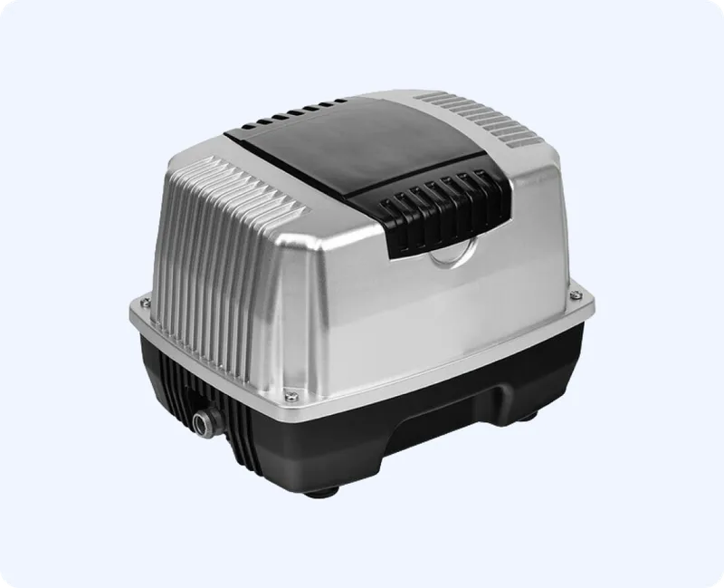

Аэраторы для пруда
Аэратор P-200, 200 л/мин, 125 Вт, для пруда до 200000л
Цена и наличие
- 1 шт.757,35 BYN / шт.В наличии
Данные на 23.11.2026.
Характеристики
- Бренд
- Sunsun
- Тип аэратора
- мембранный
- Мощность
- 125 Вт
- Объем пруда
- до 200000 л
- Производительность
- 200 л/мин
- Габаритные размеры Д*Ш*В
- 270*240*220 мм
- Давление
- 0,04 МРа
- Диаметр выходного патрубка
- Ø 12/14 мм
- Максимальная глубина работы (метры)
- 4
- Страна производитель
- Китай
- Напряжение, В
- 220
Описание
КОМПРЕССОР ДЛЯ ПРУДА И СЕПТИКА P-200, 200 Л/М, 125ВТ Компрессор универсальный, подходит для аквариумов, прудов, септиков, рыбных хозяйств, пузырьковых панелей, коптилен. Корпус компрессора изготовлен из УФ стойкого и ударопрочного ABS пластика с двойной шумоизоляцией. Компрессор установлен на антивибрационных ножках. Низкий уровень энергопотребления. Современный дизайн. Регулировка потока воздуха осуществляется внешним краном. Аэраторы рассчитаны на непрерывный режим работы: 24/7. Аэраторы могут работать на открытом воздухе, при условии защиты от осадков. Удобны в использовании и характеризуются длительным сроком службы. Официальный гарантийный срок 12 месяцев с даты покупки.
В комплекте
Шланг, длина 15 см. Ø 12/14 мм. Латунный штуцер с резьбой и диаметров Ø 12 мм. Гребенка на 10 выходов (входной канал Ø 12 мм. выходные каналы Ø 4 мм.